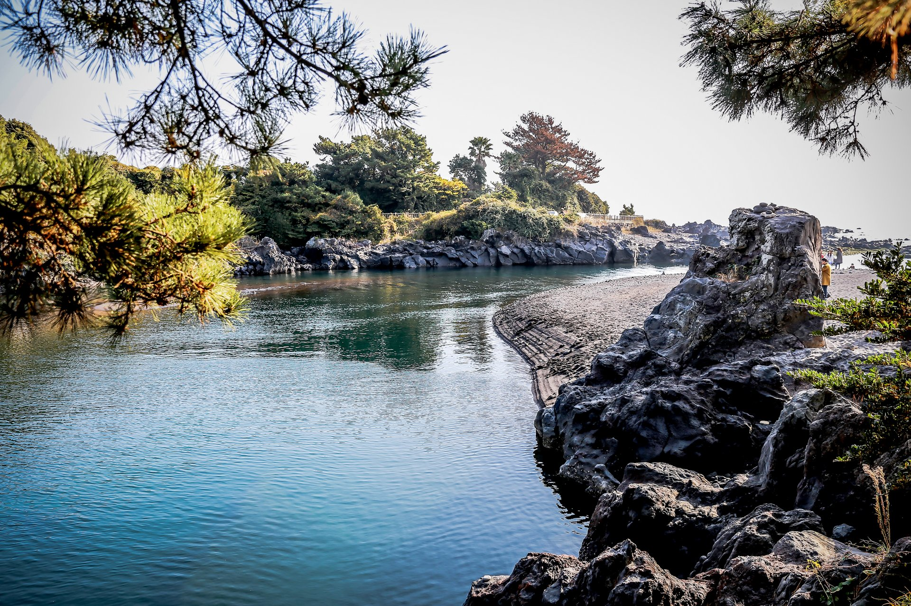

쇠소깍은 한라산에서 흘러내려 온 물줄기가 제주도 남쪽으로 흐른다는 효돈천의 끝자락에 위치하고 있다. 효돈천의 담수와 해수가 만나 생긴 깊은 웅덩이가 바로 쇠소깍이다. '쇠소'는 '소가 누워 있는 모습의 연못'을 '깍'은 '마지막 끝'을 의미한다. 쇠소깍은 양 벽에 기암괴석이 병풍처럼 둘러서 있고, 그 위로 숲이 우거져 신비한 계곡에 온 기분을 느낄 수 있다. 예전에는 가뭄을 해소하는 기우제를 지내는 신성한 땅이라하여 함부로 돌을 던지거나 물놀이를 하지 못했다. 계곡의 입구를 막아 천일염을 만들기도 했고 포구로 사용하기도 했다. 쇠소깍의 바위에 비추는 민물은 유난히 푸르고 맑아 짙회색의 기암괴석과 절경을 이룬다. 제주올레 5코스와 6코스를 연결하는 곳이어서 올레꾼들이 많이 찾는다. 산책로를 따라 계속 내려가면 검은 모래로 유명한 하효 쇠소깍 해변에 이른다. 7~8월 사이에 쇠소깍 축제가 열려 맨손 고기잡기, 다우렁길 걷기 등의 다양한 행사를 체험할 수 있다. 담수의 산책로를 내려가면 여러 명이서 함께 타는 태우와 2인이 함께 타는 전통 조각배를 타볼 수 있는 작은 승선 장소가 있다. 기암괴석의 절경 속에서 고요한 자연을 한껏 만끽 할 수 있다. 쇠소깍에는 애틋한 전설이 전해오는데, 지금으로부터 약350여 년 전 이효마을에 어느 부잣집, 귀여운 무남독녀와 그 집 머슴의 동갑내기 아들이 신분상 서로의 사랑을 꽃 피우지 못하였다. 이에 비관한 총각은 쇠소깍 상류에 있는 남내소에 몸을 던져 자살을 하였다. 이를 뒤 늦게 안 처녀는 남자의 죽음을 슬퍼하며 시신이라도 수습하게 해달라며 쇠소깍 기원바위에서 100일 동안 기도를 드렸는데, 마침 큰 비가 내려 총각의 시신이 냇물에 떠 내려오자 처녀는 시신을 부둥켜 안고 울다가 기원바위로 올라가서 사랑하는 님을 따라 ´쇠소´에 몸을 던져 죽고 말았다. 그 후 하효마을에서는 주민들이 가련한 처녀 총각의 넋을 위로하기 위해 마을 동쪽에 있는 응지동산에 당을 마련해 영혼을 모시고 마을의 무사 안녕과 번영을 지켜주도록 기원을 드리게 되었는데 지금에는 할망당 또는 여드레당이라 불려지고 있다.
쇠소깍
제주특별자치도 서귀포시 쇠소깍로 128
